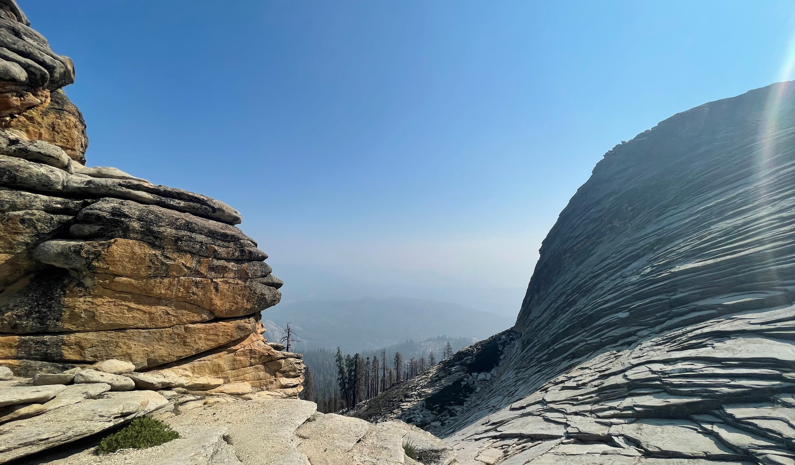

Welcome to ExploreFresno
FresNO? More like FresYES!
Fresno offers much to do when it comes to getting outside. I've compiled a few of my favorite outdoor locations found within Fresno County.
Outdoor Fun
Hover over each image to explore what outdoor adventures Fresno County has to offer!